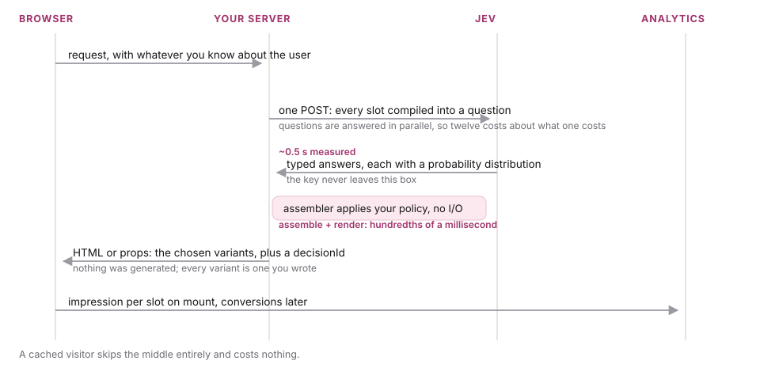
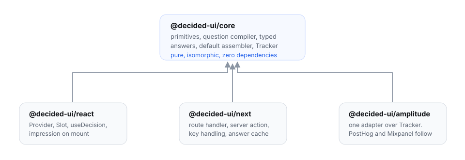

Architecture
Four packages, one round trip, and a strict line between what the model decides and what your code decides.
The organising principle
Code owns control flow. The model appears only where the system needs a judgment about a person, and it never returns anything but a typed answer. Everything downstream of that answer, including every rule about what your page looks like, is deterministic and testable without a network.
Concretely, this means the model can influence your interface in exactly one way: by moving probability mass between options you declared. It cannot name a component that does not exist, cannot invent a prop, and cannot emit markup. That is a structural guarantee, not a validation step you could forget to run.
Request lifecycle

- Your server receives a request with whatever you know about the visitor: a session summary, plan tier, referrer, cart contents. You choose what goes in; the spec decides what is actually read.
- The compiler walks the spec and turns every slot into one question. This is pure and synchronous.
- One POST to Jev. All questions travel together and are answered in parallel.
- The answers are parsed into typed objects. A malformed or partial body raises a single error type rather than escaping as whatever the JSON parser threw.
- The assembler applies your policy and produces a
Decision. No I/O, fully deterministic. - The client renders the chosen variants and fires one impression per slot.
Packages

| Package | Contains | Runs |
|---|---|---|
@decided-ui/core | the four primitives, the question compiler, answer types, the default assembler, the Tracker interface | anywhere. No React, no server, no dependencies |
@decided-ui/react | <Provider>, <Slot>, useDecision(), track(), impression-on-mount | client |
@decided-ui/next | route handler factory, App Router server action, key handling, answer cache | server |
@decided-ui/amplitude | one adapter over Tracker | client, or server if you prefer |
The split is deliberate. Core being isomorphic and dependency-free means the assembler can be unit tested in milliseconds, the spec can be shared between server and client for type inference, and an adapter for Remix or Express is a small file rather than a fork.
The server side
The decide call must run on a server because the API key must not reach the browser. With the Next adapter that is one line:
// app/api/decide/route.ts
import { createDecideHandler } from "@decided-ui/next"
import { spec } from "@/ui/spec"
export const POST = createDecideHandler({ spec })Or, in a server component, skip the round trip entirely and decide during render:
// app/product/[id]/page.tsx
import { decide } from "@decided-ui/next"
import { spec } from "@/ui/spec"
export default async function Page() {
const decision = await decide(spec, { shopper: await profileFor(cookies()) })
return <Provider decision={decision}><ProductPage /></Provider>
}Adapters for Express and Remix are the same shape and are planned for the same phase.
Caching
The cache key is a hash of the state fields the spec actually references, not of the whole state object. Two visitors whose differences your spec never reads are the same visitor as far as the model is concerned, and should cost one call between them.
Answer maps are cached rather than rendered output, so editing a component or an assembler rule takes effect immediately without spending another call. In the prototype this is an in-process map; for anything real it belongs in Redis with a TTL, and the adapter takes a pluggable store.
Failure behaviour
The framework is designed so that every failure mode renders a correct page.
| What went wrong | What renders |
|---|---|
| Jev is unreachable, or times out | every slot falls back to its declared default |
| A 200 response with an unparseable body | same, via a single typed error |
| An answer is missing for one slot | that slot falls back; the others are unaffected |
| The model names an option that is not declared | the default, marked gated |
| Confidence below the floor | the default, marked gated |
| No API key configured | the default page, every slot gated. The app still boots. |
There is no state in which the page is broken because the model was. The worst case is your default interface, which is the one you would have shipped anyway.
Testability
The assembler is a pure function from an answer map to a page, so its entire policy is unit testable with hand-written answers and no network. In the prototype that is eighteen tests covering the gate, the ordering, the caps and every fallback, and they run in under a tenth of a second.
The React layer ships a mock decider, so an app can be developed and its tests run with no key, no network and no cost. Fixing the answers also makes visual regression testing meaningful: the same answers must always produce the same page.